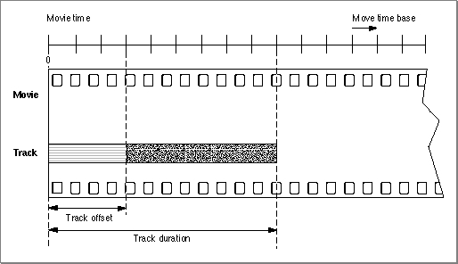
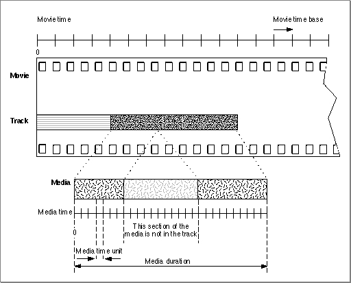

Tracks
A movie can contain one or more tracks. Each track represents a single stream of data
in a movie and is associated with a single media. The media has control information that refers to the actual movie data.All of the tracks in a movie use the movie's time coordinate system. That is, the movie's time scale defines the basic time unit for each of the movie's tracks. Each track begins at the beginning of the movie, but the track's data might not begin until some time value other than 0. This intervening time is represented by blank space--in an audio track the blank space translates to silence; in a video track the blank space generates no visual image. Each track has its own duration. This duration need not correspond to the duration of the movie. Movie duration always equals the maximum duration of all the tracks. An example of this is shown in Figure 2-6.

A track is always associated with one media. The media contains control information that refers to the data that constitutes the track. The track contains a list of references that identify portions of the media that are used in the track. In essence, these references are an edit list of the media. Consequently, a track can play the data in its media in any order and any number of times. Figure 2-7 shows how a track maps data from a media into a movie.
Figure 2-7 A track and its media
